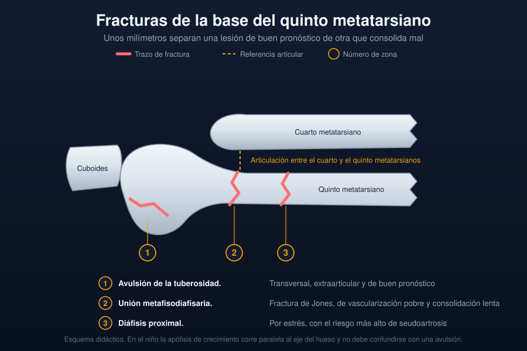

Ficha del catálogo
Fracturas de la base del quinto metatarsiano
- Sistema
- Óseo
- Modalidad
- RX
- Región
- Pie
- Dificultad
- Intermedio
La base del quinto metatarsiano concentra dos lesiones muy distintas que se tratan de manera diferente. La avulsión de la tuberosidad ocurre por inversión brusca del pie y consolida bien con tratamiento conservador. La fractura de la unión metafisodiafisaria, conocida como fractura de Jones, se sitúa unos milímetros más distal, en una zona de vascularización pobre, y tiene alto riesgo de retraso de consolidación y de seudoartrosis. Distinguir una de otra en el informe cambia el pronóstico y el manejo del paciente.
Técnica
Proyecciones dorsoplantar, oblicua y lateral del pie centradas en el borde externo. La oblicua es la que despliega mejor la base del quinto metatarsiano.
Qué observar
- Trazo transversal en la tuberosidad proximal, extraarticular en la mayoría de los casos
- Trazo en la unión metafisodiafisaria a escasa distancia de la tuberosidad
- Extensión del trazo a la articulación con el cuboides o con el cuarto metatarsiano
- Esclerosis de los bordes y reacción perióstica que indican cronicidad
- Apófisis de crecimiento en el niño, orientada paralela al eje de la diáfisis
- Edema de partes blandas del borde lateral y lesiones asociadas del tobillo
Hallazgos
Solución de continuidad en la base del quinto metatarsiano, transversal en las avulsiones y algo más distal y perpendicular al eje en la fractura de Jones.
Perlas
En el paciente esqueléticamente inmaduro la apófisis de la base es longitudinal y paralela a la diáfisis, mientras que casi todas las fracturas son transversales. Esa diferencia de orientación evita informar como fractura un centro de osificación normal.
Diagnóstico diferencial
- Apófisis de crecimiento normal
- Orientación paralela al eje del metatarsiano y bordes corticados.
- Hueso accesorio del borde lateral
- Contorno redondeado y completo, bilateral con frecuencia.
- Esguince de tobillo
- El dolor y el edema se centran en el maléolo lateral, sin trazo óseo.
Simuladores
- Superposición del cuboides sobre la base
- Canal nutricio de la diáfisis proximal
- Sesamoideo del tendón peroneo largo
Por modalidad
- RX
- Diagnóstico y seguimiento de la consolidación
- TC
- Aclara trazos dudosos y valora la seudoartrosis establecida
- RM
- Detecta fracturas de estrés incipientes con radiografía normal
Protocolo
Tres proyecciones de pie. Ante dolor persistente con radiografía normal se completa con resonancia o tomografía para descartar lesión por sobrecarga.
Clasificación
Se separan en avulsión de la tuberosidad, fractura de la unión metafisodiafisaria y fractura diafisaria proximal por estrés, con pronóstico progresivamente peor.
Errores frecuentes
- Llamar fractura de Jones a cualquier fractura de la base
- Confundir la apófisis normal del niño con un trazo agudo
- No advertir el riesgo de seudoartrosis cuando el trazo es metafisodiafisario

pie quinto metatarsiano fractura de jones avulsion apofisis seudoartrosis inversion